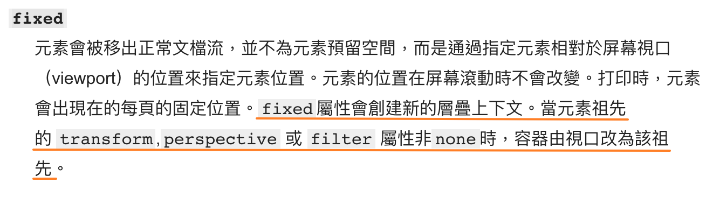
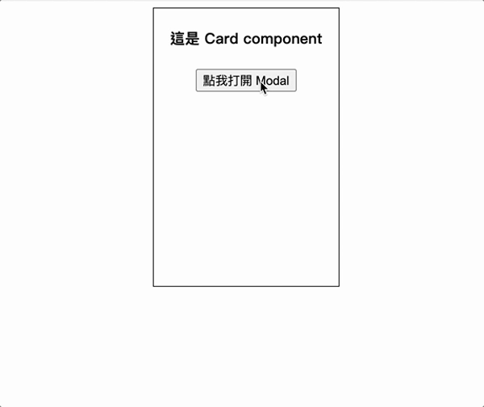
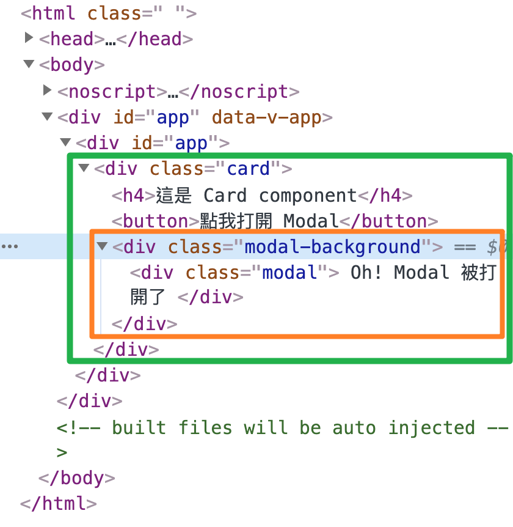
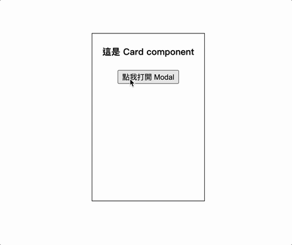
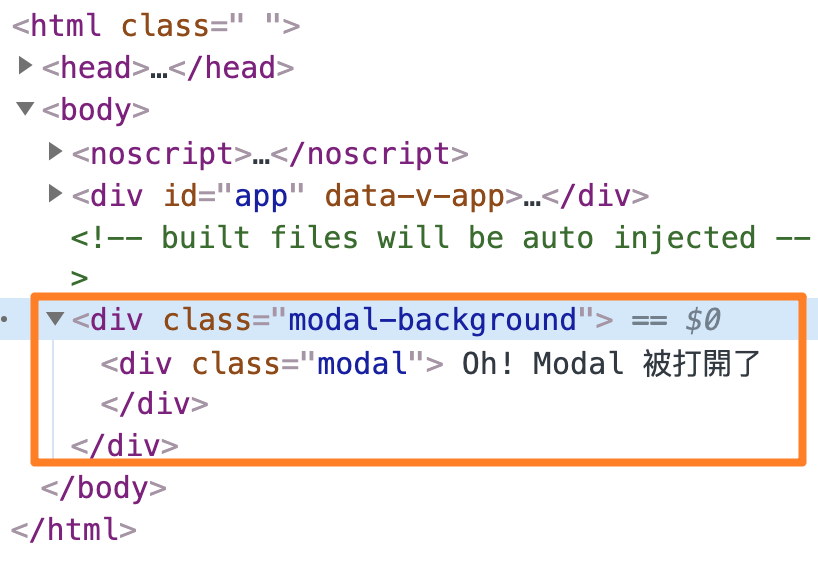
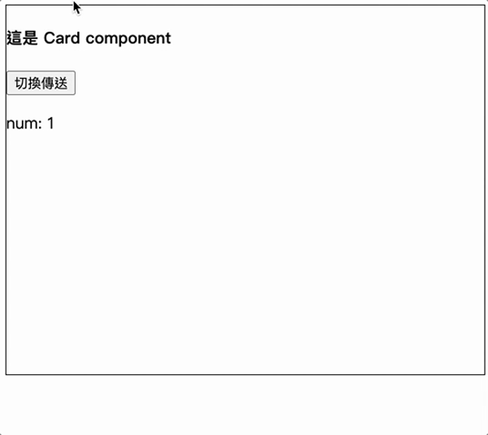

Vue3 Composition API 新增了 Teleport 功能，讓我們可以輕鬆的將組件傳送到指定的地方，很酷的是，它還能夠保存狀態!
為什麼需要 Teleport？
最常見的情境是彈跳視窗，在開發時，我們會希望把彈跳視窗的開關邏輯封裝在 component 裡面，而不是裸露在頁面上。以程式碼來說，就是將控制開關的變數 isModalOpen: false(true) 設置在 component 裡。
一個極端的例子是：有 6 張 HTML 和 CSS 樣式皆相同的 Cards，但裡面的資料不同，點擊這 6 張 Cards，會分別跳出各自的彈跳視窗，而 6 個彈跳視窗的 HTML 和 CSS 樣式皆相同，但裡面的資料不同。
在這樣的情境下，應該沒有人想要在頁面上設定 6 個變數，分別控制這 6 個彈跳視窗吧!
較好的作法是將彈跳視窗開關的邏輯封裝在 Card component 中，然後在頁面上用 v-for 產生 6 張 Card，這時每張 Card 裡控制彈跳視窗開關的變數 isModalOpen 都是獨立的，不會互相干擾。
但是這樣的方式其實會有隱患，因為一般來說會將彈跳視窗用 position: fixed 固定在視窗(viewport)，在大多數情況下，彈跳視窗會如我們所願的針對視窗做定位，但仔細看 MDN 上對於 position: fixed 的定義：

圖片來源: MDN-position
簡單來說，若彈跳視窗(position: fixed)的祖譜鏈中有一個祖先元素設定了 transform、perspective 或 filter 屬性時，那麼彈跳視窗將不再以視窗(viewport) 做定位，而是以該祖先元素做定位，那麼彈跳視窗就會壞掉！
有了 Teleport，就可以開閃現，讓彈跳視窗在 DOM tree 中瞬移到 body 節點(整個 <app> 外)的尾部，如此一來我們就可以安心的把開關的邏輯封裝在 Card 中，因為不管是 Card 或是 Card 外層元素使用了 transform、perspective 或 filter，都不再關彈跳視窗的事了，因為這時彈跳視窗的祖先元素就是 <body> → <html> → viewport。這樣還有另一個好處是，不用再微調 z-index 了，因為彈跳視窗被傳送到 <app> 後方(<body> 尾部)。
Teleport 語法
在 Vue 的 <template> 中可以直接使用 <Teleport>，無需特別引入。
<Teleport> 有兩個屬性：
- to: 用 query selector 指定要傳送到哪裡，也可以使用動態指定
:to。
1 | <teleport to="#some-id" /> |
- disabled: 決定是不是要傳送出去。
- false: 傳出去(預設)。
- true: 不要傳出去，將 <Teleport> 裡的東西留在原本的地方
範例
使用 Teleport 前
現在有 Card 與 Modal 組件，點擊 Card 裡面的按鈕，會打開彈跳視窗(Modal)，Modal 以 position: fixed 固定在視窗(viewport)。
在 Card 中引入 Modal 組件，並且把控制 Modal 開關的邏輯封裝在 Card 中。這時的畫面是可以正常運行的。
在 Card.vue 中:
1 | <template> |
1 | <script> |
1 | <style scoped> |
在 Modal.vue 中:
1 | <template> |
1 | <script> |
1 | <style scoped> |
效果如下

打開開發者工具檢視一下 DOM 結構，可以看到在尚未使用 <Teleport> 之前，Modal 是長在 Card 裡面。

如剛剛所說，這樣的問題是，只要上層元素中有一個設定了 transform、perspective 或 filter，那麼 Modal 將不再針對視窗做定位，且有時可能會需要微調 z-index。
證明方式很簡單，可以在 Card 的 style 中加入 transform: translateY(20%) 來做測試。程式碼範例
1 | <style scoped> |
會發現 Modal 壞掉了，因為這時 Modal 將以 Card 做定位，而非視窗。

使用 Teleport 後
現在使用 <Teleport>，將 Modal 瞬移到 body 節點的尾部。程式碼範例
1 | <template> |
1 | <script> |
1 | <style scoped> |
再次打開開發者工具檢視，可以看到 Modal 出現在 body 內的尾部(在

Teleport 特性 - 保留狀態
Teleport 還有一個特別之處是：裡面的狀態會被保存，就像是 <keep-alive> 那樣，不會被 destroyed(或 unmounted)。
範例
利用 <Teleport> 的 disabled 屬性來證明：
首先讓 isNumTeleport 預設值為 true(表示 Teleport 內的東西不會被傳送出去)，當點擊按鈕時，就會 toggle isNumTeleport 變數，使 <Teleport> 內東西可以在 <Card> 與 <body> 之間來回穿梭。
而 <Teleport> 內為 num，每 1 秒會增加 1。
1 | <template> |
1 | <script> |
1 | <style scoped> |
實現效果如下，可以清楚看到，無論怎麼切換，<Teleport> 裡面的狀態都會被保留(num 不會重頭計算)。

Facebook 和 Youtube 的縮小影片功能，感覺就很適合用 Teleport 實現呢XD

結論
使用 <Teleport> 將彈跳視窗傳送到 <body> 尾部(<app> 後方)的好處是可以避開 CSS 中 fixed 定位的雷，也不用再調 z-index 了，讓開發者可以安心地的把邏輯封裝在 component 裡面。
<Teleport> 除了瞬移之外，還有保留狀態的特性，所以總覺得 <Teleport> 還可以拿來應用在其它有趣的地方，但是暫時想不到其它案例哈，如果讀者有遇到其它適合使用 <Teleport> 的情境，歡迎留言告訴我XD
參考資料